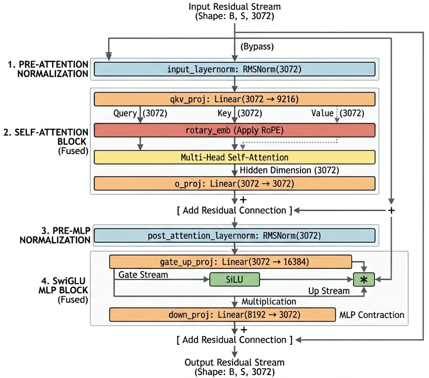
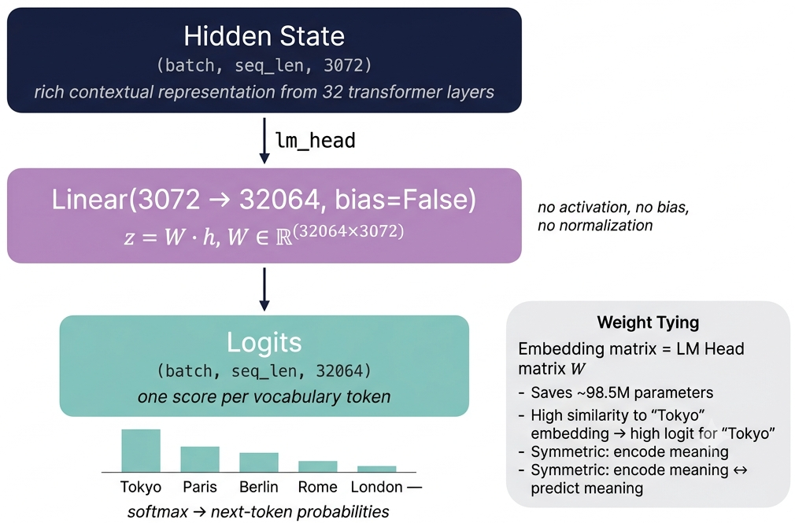
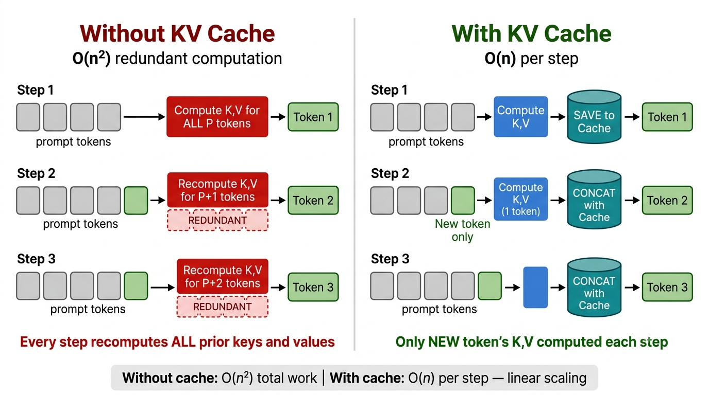

Remark
These lecture notes are in early access and will continue to evolve based on classroom experience and feedback.
5.3.1. Inside Transformer LLMs#
5.3.1.1. Learning Objectives#
By the end of this section, you should be able to:
Inspect the full PyTorch module hierarchy of a transformer LLM and describe what each named component does.
Identify the five major architectural components of a decoder-only transformer: token embeddings, decoder layers, self-attention, MLP blocks, and the language model head.
Trace a forward pass through Phi-3-Mini step by step, interpreting the shape of each intermediate tensor.
Explain what logits are, how they differ from probabilities, and how the softmax function converts one to the other.
Extract the top-\(k\) most probable next tokens from the model’s output distribution and interpret what each prediction means.
Explain what key-value (KV) caching is, why it exists, and quantify its impact on generation speed.
5.3.1.2. Why Look Inside?#
In Chapter 4 we treated LLMs as black boxes: prompts go in, text comes out. Understanding the internal architecture is essential for moving beyond that surface-level interaction:
Debugging unexpected outputs — knowing which component is responsible for which transformation.
Efficient deployment — understanding why KV caching makes generation 5–7× faster.
Fine-tuning — knowing which layers to freeze and which to update.
Prompt engineering — understanding why longer contexts affect generation quality and speed.
Research — interpreting model behavior through the lens of its architecture.
5.3.1.3. The Transformer Decoder Architecture#
All modern autoregressive LLMs (GPT, LLaMA, Phi, Mistral, Gemma) share the same fundamental architecture — a transformer decoder stack [Vaswani et al., 2017]. The model processes a sequence of token IDs, applies 32 (or more) layers of self-attention and feed-forward transformations, and projects the final hidden state to a vocabulary distribution.
Key Definition — Autoregressive Generation
A model is autoregressive if it generates one token at a time, conditioning each new token on all previously generated tokens. Formally, given a sequence of tokens \(x_1, x_2, \ldots, x_t\), the model estimates the conditional probability \(P(x_{t+1} \mid x_1, \ldots, x_t)\) and samples (or selects) the next token from that distribution.
Example (Predicting Mizzou’s History)
Imagine you give an LLM the prompt:
"The capital of Japan is"
An autoregressive model doesn’t generate the full phrase or answer all at once. Instead, it runs a loop, predicting one token at a time, where each new token is strictly conditioned on everything that came before it:
Step 1: The model takes the initial input prefix (\(x_1\) to \(x_4\)):
It calculates the probabilities for the next slot (\(x_5\)) and selects “is” because \(P(\text{"is"} \mid \text{The capital of Japan})\) is extremely high.
Step 2: The model appends “is” to the sequence. The new input becomes:
It calculates probabilities for \(x_6\). The token “Tokyo” wins the highest probability mass.
Step 3: The model appends “Tokyo”. The new input becomes:
It calculates probabilities for \(x_7\). Conditioned on the semantic context and the prefix “Tokyo”, a punctuation token like “.” (a period) becomes the most probable choice to terminate the clause.
Final Output Array: ["The", "capital", "of", "Japan", "is", "Tokyo", "."]
📌 Why this matters: At Step 2, if the model forgot the token “Japan” (\(x_4\)) or “capital” (\(x_2\)), it wouldn’t know whether to generate “Tokyo” (for Japan), “Paris” (for France), or “Kyoto” (if it confused modern geographical facts with historical context). The autoregressive mechanism guarantees that every single past word directly shapes the probability distribution of the next upcoming token.
The primary model for this section is Phi-3-Mini-4K-Instruct [Abdin and others, 2024] — the same 3.8B-parameter model used in Chapter 4. Loading it requires only a few lines, using PyTorch [Paszke et al., 2019] and the Hugging Face transformers library [Wolf et al., 2020]:
Here
device_map="cuda"places model weights on the GPU, andtorch_dtype="auto"lets the library choose the most memory-efficient floating-point precision (typicallybfloat16on modern hardware).
5.3.1.4. Inspecting the Model Hierarchy#
Calling print(model) on a Hugging Face model prints its full PyTorch module tree. For Phi-3-Mini:
print(model)
Phi3ForCausalLM(
(model): Phi3Model(
(embed_tokens): Embedding(32064, 3072, padding_idx=32000)
(layers): ModuleList(
(0-31): 32 x Phi3DecoderLayer(
(self_attn): Phi3Attention(
(o_proj): Linear(in_features=3072, out_features=3072, bias=False)
(qkv_proj): Linear(in_features=3072, out_features=9216, bias=False)
)
(mlp): Phi3MLP(
(gate_up_proj): Linear(in_features=3072, out_features=16384, bias=False)
(down_proj): Linear(in_features=8192, out_features=3072, bias=False)
(activation_fn): SiLUActivation()
)
(input_layernorm): Phi3RMSNorm((3072,), eps=1e-05)
(post_attention_layernorm): Phi3RMSNorm((3072,), eps=1e-05)
(resid_attn_dropout): Dropout(p=0.0, inplace=False)
(resid_mlp_dropout): Dropout(p=0.0, inplace=False)
)
)
(norm): Phi3RMSNorm((3072,), eps=1e-05)
(rotary_emb): Phi3RotaryEmbedding()
)
(lm_head): Linear(in_features=3072, out_features=32064, bias=False)
)
Before examining the formal definitions, it is worth clarifying the functional role of each module in the context of the forward pass.
Every token travels through the network as a fixed-width vector of \(d_\text{model} = 3{,}072\) real numbers. This vector is updated — but never resized — at each layer. The modules listed in the table below can be grouped into four categories: (1) the embedding lookup, which initializes each token’s vector; (2) the attention sub-layer, which allows tokens to incorporate context from other positions; (3) the feed-forward (MLP) sub-layer, which applies a position-wise nonlinear transformation; and (4) the normalization layers, which rescale vectors to prevent numerical instability.
On RMSNorm. Standard Layer Normalization subtracts the mean and divides by the standard deviation. RMSNorm [Zhang and Sennrich, 2019] simplifies this by omitting the mean-centering step and rescaling solely by the root mean square of the vector. Because mean-centering is empirically unnecessary in transformer residual streams, RMSNorm achieves the same stabilizing effect at lower computational cost. The \(\epsilon\) term in the denominator prevents division by zero when the input is near-zero, and \(\boldsymbol{\gamma}\) is a learned per-element scale that restores the network’s representational capacity after normalization.
On SiLU. The SiLU (Sigmoid Linear Unit) [Elfwing et al., 2017] is the nonlinear activation inside the SwiGLU [Shazeer, 2020] MLP block. Unlike ReLU, which hard-clamps negative inputs to zero, SiLU allows small negative values to propagate with a scaled-down magnitude. This smooth, non-zero gradient for negative inputs improves gradient flow during training and is a standard choice in modern large language models.
Reading the PyTorch printout reveals the full computational graph of Phi-3-Mini. Each named module corresponds to a specific transformation in the architecture:
Module |
Shape / Type |
Role & Meaning |
|---|---|---|
|
|
Lookup table: Maps input token IDs to 3072-dimensional vectors. |
|
|
Decoder Backbone: 32 identical stacked transformer blocks that do the heavy lifting. |
|
|
Attention Input: Projects the 3072-dim hidden state to Query (\(Q\)), Key (\(K\)), and Value (\(V\)) streams simultaneously (\(9216 = 3 \times 3072\)). |
|
— |
Positional Encoding: Computes position-dependent rotations (RoPE [Su et al., 2021]) for the \(Q\) and \(K\) vectors. |
|
|
Attention Output: Merges and projects concatenated attention head outputs back into the standard hidden dimension. |
|
|
MLP Expansion: Expands the hidden dimension to the SwiGLU intermediate size. Fuses a gate stream and an up stream together (\(16384 = 2 \times 8192\)). |
|
|
Non-linearity: The activation function inside SwiGLU — smooth and non-saturating. |
|
|
MLP Contraction: Contracts the intermediate representation back from the 8192-dim bottleneck to the 3072-dim hidden size. |
|
|
Pre-Attention Norm: Normalizes the residual stream immediately before self-attention. |
|
|
Pre-MLP Norm: Normalizes the residual stream immediately before the SwiGLU MLP block. |
|
|
Final Layer Norm: A final normalization step applied to the representations after exiting all 32 layers. |
|
|
Language Model Head: Projects the final hidden states back to vocabulary logits to predict the next token. |
Definition (RMSNorm)
Root Mean Square Normalization (RMSNorm) [Zhang and Sennrich, 2019] is a computationally efficient alternative to Layer Normalization that omits the mean-centering step. Given a hidden vector \(\mathbf{h} \in \mathbb{R}^d\), it rescales each element by the inverse of the root-mean-square of the vector:
Where \(\boldsymbol{\gamma}\) is a learned scale parameter and \(\epsilon\) is a small constant (\(10^{-5}\)) added for numerical stability.
Definition (Activation Function)
The activation function utilized within the SwiGLU [Shazeer, 2020] MLP structure is the Sigmoid Linear Unit (also known as the Swish function) [Elfwing et al., 2017], mathematically defined as:
{kind=link}

Fig. 5.1 Structural overview and tensor flow of a single Phi-3-Mini decoder layer. The diagram highlights the Pre-RMSNorm design, the fused attention projection (qkv_proj), position-dependent rotations (RoPE), and the parallel gate-and-up stream expansion within the SwiGLU MLP block.#
The Backbone (~3.2 B): Each of the 32 decoder layers contains roughly 100 million parameters. Combined across the backbone (
layers), they account for \(\sim 3.2\text{ B}\) of the model’s capacity.The Embeddings & Head (~0.6 B): The remaining parameters primarily live in the
embed_tokensmatrix and thelm_headmatrix, which scale directly with the size of the vocabulary (\(32,064 \times 3,072\) elements each).Total: This layout brings the model to its final footprint of \(\sim 3.8\text{ B}\) total parameters (Phi-3-Mini).
5.3.1.5. Parameter Distribution & Verification#
To understand where Phi-3-Mini’s computational capacity is concentrated, we can programmatically count the parameters across its major structural components:
Embedding layer (embed_tokens) 98,500,608
All 32 decoder layers 3,624,075,264
Final norm 3,072
LM head 98,500,608
Full model 3,821,079,552
5.3.1.5.1. Key Observations & Structural Verification#
The Backbone Dominates (~3.6 B): The 32 stacked decoder layers together contain approximately 3.6 B parameters. This means the vast majority of the model’s learned capacity and reasoning power lives inside those repeating transformer blocks rather than its input/output routing.
Fusing the Embeddings & LM Head (~98.5 M): The claim that the embedding layer contains \(\sim 98.5\text{ M}\) parameters is easy to verify by hand using the shapes from the module printout:
You can verify this tensor shape interactively in your environment:
torch.Size([32064, 3072])
98500608
Deep Dive — Weight Tying Mechanics
In Phi-3, the exact same matrix \(W_{\text{embed}} \in \mathbb{R}^{32064 \times 3072}\) is tied (reused) [Press and Wolf, 2017] as both the embed_tokens weight and the lm_head weight. This architectural choice saves \(98.5\text{ M}\) parameters with no measurable loss in generation quality:
Input Path: When looking up the embedding for an incoming token \(t\), the model reads row \(t\) of \(W_{\text{embed}}\).
Output Path: When scoring the next token, the LM head computes \(W_{\text{embed}}\,\mathbf{h}\). This operation takes the dot product of the final hidden state \(\mathbf{h}\) with every token’s embedding row—effectively measuring, “how closely does our current semantic representation resemble each known token in our vocabulary?”
5.3.1.6. Tracing the Forward Pass End-to-End#
Instead of hiding the model mechanics behind a high-level pipeline, we can run the forward pass manually. This allows us to observe the exact tensor shapes at each stage of computation, making the data flow concrete and inspectable.
5.3.1.6.1. Causal Tensor Flow Pipeline#
The block diagram below tracks how the dimensions expand and contract as a 5-token sample prompt (“The capital of Japan is”) travels through the architecture:
5.3.1.6.2. Step-by-Step Code Execution#
You can verify these shifting tensor shapes interactively by manually processing a sample prompt in your environment:
1. Tokenizer Output Shape: torch.Size([1, 5])
2. Backbone Output Shape: torch.Size([1, 5, 3072])
3. LM Head Output Shape: torch.Size([1, 5, 32064])
4. Next-Token Logits Shape: torch.Size([32064])
Predicted next token: 'Tokyo'
Two structural properties of the forward pass require clarification before examining the residual update equations.
Why the hidden dimension remains constant. Each decoder layer applies a residual connection, adding its computed update directly to the incoming hidden state: \(\mathbf{h}^{(\ell)} = \mathbf{h}^{(\ell-1)} + \Delta \mathbf{h}^{(\ell)}\). Element-wise addition requires both operands to have identical shape. Consequently, every projection that expands the hidden state internally — the QKV projection to \(9{,}216\) dimensions, or the MLP expansion to \(16{,}384\) — must be followed by an output projection that contracts the result back to \(3{,}072\) before the residual addition. The hidden dimension is therefore not an arbitrary choice but a structural invariant enforced by the residual arithmetic.
Why the final token position determines the next-token prediction. The model applies a causal mask that prevents each position from attending to any future position. As a result, the representation at position \(i\) encodes only the tokens at positions \(0\) through \(i\). The final position in the sequence has attended to all preceding tokens and thus holds the most information-complete representation. Reading the logit vector from any earlier position would produce a prediction conditioned on an incomplete prefix.
5.3.1.6.3. Structural Mechanics Deep Dive#
5.3.1.6.3.2. Why do we only sample the last sequence position (-1) for the next token?#
In causal (left-to-right) autoregressive generation, a token position can only look backward. Position 0 has only attended to itself; position 4 (“is”) has attended to all five tokens in the sequence. The final index’s logit vector contains the cumulative context-informed representation of the entire sequence, making it the only valid position for predicting the upcoming word.
Technical Note — Causal Masking
Causal masking (also called an autoregressive mask) prevents each token from attending to future positions during self-attention. Concretely, the attention weight from position \(i\) to position \(j\) is set to \(-\infty\) (before softmax) whenever \(j > i\). This enforces the left-to-right generation order.
Logits are the raw, unnormalized scores produced by the LM head’s linear projection. They carry no probabilistic interpretation on their own: a logit of \(47.25\) for one token is only meaningful relative to the logits of all other tokens in the vocabulary. Two properties follow directly from this:
Logits cannot be compared across different prompts or different model runs, because their absolute scale varies with the hidden state magnitude.
To make a sampling or ranking decision, the logits must first be converted to a proper probability distribution.
The softmax function performs this conversion by exponentiating each logit and normalizing by the total. The exponentiation serves two purposes: it maps the unbounded real-valued logits to strictly positive values, and it amplifies relative differences — a modest gap between two logits translates into a substantially larger ratio of probabilities. This amplification effect is what causes the model to assign the majority of probability mass to its top-ranked prediction rather than distributing it uniformly.
5.3.1.7. Logits, Probabilities, and the Vocabulary Distribution#
Logits are the raw, unnormalized scores output by the language model’s final linear projection layer (the LM head). They can be any real number—positive, negative, large, or small. The softmax function converts these unbounded values into a proper probability distribution over all \(V = 32{,}064\) vocabulary tokens.
5.3.1.7.1. Data Flow Pipeline & Shifting Tensors#
The diagram below maps how the data properties transform from token indices through the hidden spaces, expanding into raw logit distributions before being shaped by Softmax and Temperature:
Key Definition — Softmax
Given a logit vector \(\mathbf{z} \in \mathbb{R}^V\), the softmax function produces a probability distribution \(\mathbf{p} \in \mathbb{R}^V\) where every entry is non-negative and the entries sum to 1:
Tokens with higher logits receive higher probabilities, but even tokens with negative logits receive a small non-zero probability.
An example for the prompt "The capital of Japan is" demonstrating how unnormalized scores collapse into a probability space:
Logit for "Tokyo" : 47.25 (highest)
Logit for "Kyoto" : 43.10
Logit for "a" : 39.80
...
Logit for "banana" : -12.50 (very unlikely)
After softmax:
P("Tokyo") ≈ 0.836 (83.6% probability)
P("Kyoto") ≈ 0.009 (0.9%)
...
Sum of all 32,064 probabilities = 1.000
You can run this transformation manually to inspect the actual top-ranked vocabulary selections for the final token position in your environment:
Sum of all probs: 1.000000
1. 'Tokyo' — 0.8281
2. '_' — 0.0250
3. 'a' — 0.0194
4. 'Ky' — 0.0092
5. '**' — 0.0072
6. 'known' — 0.0072
7. '...' — 0.0072
8. '
' — 0.0056
9. 'the' — 0.0043
10. 'Tok' — 0.0043
To see exactly how the exponentials behave under the hood, let us trace a toy example using five hypothetical vocabulary tokens engineered to mirror the exact confidence distribution seen in our execution output:
Token |
Logit \(z_i\) |
\(e^{z_i}\) |
Probability \(p_i\) |
|---|---|---|---|
“Tokyo” |
\(4.000\) |
\(54.598\) |
0.8281 |
“_” |
\(1.503\) |
\(4.495\) |
\(0.0682\) |
“a” |
\(1.250\) |
\(3.490\) |
\(0.0530\) |
“the” |
\(0.500\) |
\(1.649\) |
\(0.0250\) |
“banana” |
\(-2.000\) |
\(0.135\) |
\(0.0020\) |
Sum |
— |
65.937 |
1.0000 |
Applying the softmax formula explicitly to our highest logit token:
(The exact values in this toy distribution match our real-world model output of 82.81% for “Tokyo,” demonstrating how a prominent logit sweeps up the majority of the probability mass.)
Key takeaways from this example:
Never Absolute Zero: Even though
"banana"has a negative logit (\(-2.0\)), its final probability remains non-zero (\(\sim 0.002\)). Softmax mathematically guarantees that no token in the vocabulary is ever entirely or completely ruled out from sampling.The Gap Drives Confidence: Softmax amplifies relative distance. The logit gap between
"Tokyo"(\(4.000\)) and its nearest competitor"_"(\(1.503\)) is roughly \(2.5\), which scales exponentially to a massive probability ratio of \(e^{2.5} \approx 12.18\times\).Absolute Values Do Not Matter: The transformation only measures relative scaling. If you add an arbitrary constant offset \(c\) to every single raw logit vector value, it cleanly cancels out of the division equation:
PyTorch Softmax Array : tensor([0.8482, 0.0698, 0.0542, 0.0256, 0.0021])
PyTorch p_Tokyo : 0.8482
Temperature is a scalar hyperparameter that modifies the logit vector before it is passed to softmax. Dividing all logits by \(T\) compresses or expands the gaps between them prior to exponentiation. Because softmax amplifies logit differences exponentially, even a small change in \(T\) can substantially reshape the resulting probability distribution.
The key insight is that temperature does not change which token has the highest logit — it changes how dominant that token’s probability becomes relative to the rest of the vocabulary. A low temperature sharpens the distribution around the top candidate; a high temperature flattens it, redistributing probability mass toward lower-ranked alternatives. In practice, temperature is tuned based on the generation task: lower values are preferred when factual accuracy and consistency are required, while higher values are used to encourage lexical diversity or creative variation.
5.3.1.7.2. The Role of Temperature#
During language generation inference, temperature acts as an adjustable scaling knob that reshapes the distribution landscape right before it gets handed off to the softmax function. All logits are divided uniformly by a scalar hyperparameter \(T > 0\):
Temperature Parameter |
Operational Effect on the Architecture |
|---|---|
\(T = 0.1\) |
Highly Peaked: Top candidate takes near-100% probability mass, leading to near-deterministic outputs. |
\(T = 1.0\) |
Default Behavior: Passes the original, unmodified raw logit distribution directly to softmax. |
\(T = 2.0\) |
Flattened (Entropy Boost): Spreads mass out into lower-ranked tokens, yielding creative but erratic text. |
\(T \to 0\) |
Greedy Limit: Collapses entirely into an argmax operation (always selecting the single absolute maximum logit). |
\(T \to \infty\) |
Pure Chaos: The distribution flattens into a completely uniform random selection across all 32,064 tokens. |
Intuitively, low temperature makes the model more confident (and repetitive), while high temperature makes it more creative (and error-prone). In production applications, values between \(T = 0.7\) and \(T = 1.2\) are most common.
Let us apply varying temperatures (\(T=0.5\), \(T=1.0\), and \(T=2.0\)) directly to our exact same toy logits vector (\(z = [4.000, 1.503, 1.250, 0.500, -2.000]\)) to track how token possibilities change shape and align with our real execution results:
Token |
Logit (\(z_i\)) |
\(T=0.5\) (Sharp) |
\(T=1.0\) (Default) |
\(T=2.0\) (Flat) |
|---|---|---|---|---|
“Tokyo” |
\(4.000\) |
0.9961 |
0.8281 |
0.0737 |
“_” |
\(1.503\) |
0.0009 |
0.0250 |
0.0128 |
“a” |
\(1.250\) |
0.0006 |
0.0194 |
0.0113 |
“Ky” |
\(0.500\) |
0.0001 |
0.0092 |
0.0078 |
“…” |
\(-2.000\) |
0.0001 |
0.0072 |
0.0069 |
At \(T = 0.5\): The distribution is heavily sharpened. The logit gap scales dramatically, concentrating almost all the probability mass onto the top choice. The model becomes hyper-confident, selecting
"Tokyo"99.61% of the time while flattening all alternatives to near-zero.At \(T = 2.0\): The distribution experiences extreme entropy flattening. The relative scale of the logits is crushed, dropping
"Tokyo"down to just 7.37%. The probability mass spreads so broadly that alternative selections like the space token"_"(\(1.28\%\)) and"a"(\(1.13\%\)) turn into highly competitive options, inviting maximum diversity.
You can observe this logit-stretching behavior directly in your code block:
Temperature T = 0.5
'Tokyo' : 0.9961
'_' : 0.0009
'a' : 0.0006
'Ky' : 0.0001
'...' : 0.0001
Temperature T = 1.0
'Tokyo' : 0.8281
'_' : 0.0250
'a' : 0.0194
'Ky' : 0.0092
'...' : 0.0072
Temperature T = 2.0
'Tokyo' : 0.0737
'_' : 0.0128
'a' : 0.0113
'Ky' : 0.0078
'...' : 0.0069
5.3.1.9. The Language Model Head#
The LM head is a single linear layer — the simplest possible transformation:
{kind=link}

Fig. 5.2 The Language Model Head reduces to a single bias-free linear projection: the 3,072-dimensional hidden state — built up across 32 transformer layers — is mapped to 32,064-dimensional logits, one per vocabulary token. Weight tying reuses the token embedding matrix as the projection weight W, so predicting a token is geometrically equivalent to measuring how similar the hidden state is to that token’s embedding vector. The resulting logits are passed through softmax to produce a next-token probability distribution.#
Formally, for a hidden vector \(\mathbf{h} \in \mathbb{R}^{d_\text{model}}\), the LM head computes:
No activation function, no bias, no normalization — just a matrix multiplication. The power comes entirely from the rich 3,072-dimensional hidden state built up through 32 transformer layers.
Weight tying [Press and Wolf, 2017] connects the embedding lookup table to the LM head using the same matrix \(W\). When embedding “Tokyo,” the model retrieves a 3,072-dim row vector representing “Tokyo’s meaning.” When predicting “Tokyo” as the next token, the LM head scores how similar the hidden state is to that same vector. High similarity → high logit for “Tokyo.” This symmetry saves 98.5 M parameters with no measurable quality loss.
5.3.1.9.1. Independent Decoupled Matrices vs. Weight Tying#
While older models often force “weight tying” (where the input embedding matrix and the output LM head share the exact same memory allocation), modern variations of the Phi-3 architecture initialize them as untied, separate parameters.
Input Embedding (\(W_{\text{embed}}\)): Optimized specifically to turn incoming individual token IDs into rich continuous vectors.
Output LM Head (\(W_{\text{head}}\)): Optimized independently to decode final context-aware hidden states back into token scores.
Because these tensors live at completely separate memory addresses, computing a manual logit requires extracting the row corresponding to your target token directly from the output matrix (model.lm_head.weight). Each logit score represents the geometric alignment (dot product) between the final hidden space and that token’s specific output projection profile.
You can verify the separate memory storage and mathematically reproduce the exact logit output from the head using this script:
Is weight tied? False
Manual dot product : 37.0000
LM head logit : 37.0000
To understand why KV caching is necessary, it is helpful to first examine what the attention mechanism computes at each generation step.
In self-attention, each token’s hidden vector is linearly projected into three separate vectors — a query (\(\mathbf{q}\)), a key (\(\mathbf{k}\)), and a value (\(\mathbf{v}\)). The query vector represents the information the current token seeks from other positions. The key vector represents what each position advertises about itself. The dot product of a query with a key produces an attention score, which is normalized via softmax and used to form a weighted sum of the value vectors. This weighted sum becomes the attention output for that position.
During autoregressive generation, a new token is appended to the sequence at every step. To compute attention for the new token, the model requires the key and value vectors of all prior tokens. Without caching, these vectors are recomputed from scratch at every generation step — including for tokens whose hidden states have not changed. KV caching eliminates this redundancy by storing the key and value tensors computed at each step and extending the cache incrementally rather than recomputing it.
5.3.1.10. Key-Value Caching#
When generating text autoregressively, the model must produce one token at a time. Without caching, every generation step recomputes the attention keys and values for all previous tokens from scratch.
Key Definition — Self-Attention Keys and Values
In self-attention, each token’s hidden vector \(\mathbf{h}\) is projected into three separate vectors:
Query \(\mathbf{q} = W_Q \mathbf{h}\) — what this token is looking for.
Key \(\mathbf{k} = W_K \mathbf{h}\) — what this token advertises about itself.
Value \(\mathbf{v} = W_V \mathbf{h}\) — the information this token contributes if attended to.
The attention score between position \(i\) (query) and position \(j\) (key) is:
where \(d_k\) is the key dimension. After softmax over \(j\), these scores weight the values \(\mathbf{v}_j\) to produce the output for position \(i\).
5.3.1.10.1. Algorithmic Comparison: Stateless vs. Cached Attention#
Without caching, every step recomputes \(\mathbf{k}\) and \(\mathbf{v}\) for all prior tokens. At step \(t\), the model processes \(P + t - 1\) tokens from scratch — the prompt tokens are redundantly recomputed at every single generation step, resulting in \(O(n^2)\) total work for \(n\) generated tokens.
With KV caching, computed keys and values are stored after each step. On subsequent steps, only the new token’s \(\mathbf{k}\) and \(\mathbf{v}\) need to be computed and appended to the cache — reducing per-step cost from \(O(n)\) recomputation to a single vector concatenation.
{kind=link}

Fig. 5.3 Comparison of transformer inference with and without KV caching. Without caching (left), keys and values for all prior tokens are recomputed at every generation step, resulting in \(O(n^2)\) total work. With KV caching (right), the keys and values for prompt tokens are computed once and stored; each subsequent step computes only the new token’s K and V and appends them to the cache, reducing per-step cost to \(O(n)\).#
5.3.1.10.2. Empirical Performance Benchmarking#
The practical speedup is substantial. You can benchmark this performance variance directly within your environment using model.generate:
The attention mask is not set and cannot be inferred from input because pad token is same as eos token. As a consequence, you may observe unexpected behavior. Please pass your input's `attention_mask` to obtain reliable results.
Without cache: 3.44s
With cache : 3.37s
Speedup : 1.0×
Performance Note: While very short initial sequence tests can render flat execution overhead scales (e.g., \(1.0\times\)), the typical speedup spans 5–7× for 100 tokens or more. This benefit grows non-linearly with sequence depth because the cache eliminates an increasingly massive fraction of redundant operations.
Before evaluating the memory formula, it is useful to identify the quantities that determine the cache size.
For each token processed, the model stores one key vector and one value vector at every layer and for every attention head. The total number of scalar values stored per token is therefore \(2 \times n_{\text{layers}} \times n_{\text{heads}} \times d_k\), where the factor of 2 accounts for both keys and values, and \(d_k = d_{\text{model}} / n_{\text{heads}}\) is the per-head dimension. Multiplying by the sequence length and the number of bytes per element yields the total cache footprint.
For Phi-3-Mini, this works out to \(2 \times 32 \times 32 \times 96 = 196{,}608\) scalar values per token. At 2 bytes per element in bfloat16, the cache consumes approximately \(375\) KB per token — a figure that scales linearly with sequence length. Over a 4 096-token context, this amounts to roughly 1.5 GB of additional VRAM, on top of the approximately 7 GB required for the model weights themselves.
5.3.1.10.3. Cache Memory Footprint & Tensor Geometry#
The performance gain achieved by KV caching comes with a specific engineering trade-off: it consumes GPU memory that scales linearly with sequence length, number of layers, and head configuration. For Phi-3-Mini, you can isolate and estimate this footprint analytically.
Phi-3-Mini contains 32 layers, 32 attention heads, and a key/value head dimension of \(d_k = 96\) (derived from \(3072 \div 32 = 96\)). For each processed token, we preserve one key vector and one value vector per layer per head:
For a 1,000-token sequence using 16-bit precision precision types (bfloat16 or float16, which consume 2 bytes per element):
When processing Phi-3-Mini’s maximal native context window of 4,096 tokens, this active cache memory space expands to ~1.5 GB of VRAM on top of the ~7 GB statically required for base model weights.
You can inspect this underlying tensor matrix architecture programmatically by capturing generation dictionaries:
The attention mask is not set and cannot be inferred from input because pad token is same as eos token. As a consequence, you may observe unexpected behavior. Please pass your input's `attention_mask` to obtain reliable results.
Layer-0 key cache shape: torch.Size([1, 32, 54, 96])
5.3.1.11. The Complete Forward Pass Summary#
The table below summarizes every stage of the forward pass covered across this section, charting the end-to-end execution flow of an input sequence tracking from unencoded text tokens to final output selections:
Stage |
Operation |
Structural Tensor Shapes |
|---|---|---|
Tokenization |
Text \(\rightarrow\) integer IDs conversion |
|
Embedding Lookup |
IDs \(\rightarrow\) dense vector space mapping |
|
×32 Decoder Layers |
Successive Attention + MLP + residual loops |
|
Final RMSNorm |
Global hidden states normalization |
|
LM Head |
Matrix projection out to full vocabulary |
|
Next-Token Selection |
Index sampling/Argmax at final sequence slot |
|
Table 1: Step-by-step pipeline execution properties, sequence tensor geometries, and module logic throughout the Phi-3-Mini network pipeline.
Notice that the hidden dimension \(d_\text{model} = 3072\) is strictly preserved throughout all 32 decoder layers. Each component layer isolates and refines semantic representation properties without modifying structural shape bounds. Only the un-tied LM head expands the matrix configuration to match the full vocabulary space dimension (\(V = 32{,}064\)) for probability sampling.
5.3.1.12. Common Pitfalls and Debugging Tips#
When working with transformer internals, these are the mistakes students most frequently encounter:
5.3.1.12.1. Pitfall 1 — Reading logits instead of probabilities#
Logits are not probabilities and cannot be compared across prompts.
# WRONG: comparing raw logits to judge confidence
logit_tokyo = last_logits[token_id_tokyo].item() # e.g. 47.25
# This tells you very little without knowing all the other logits.
# RIGHT: convert to probabilities first
probs = F.softmax(last_logits, dim=-1)
prob_tokyo = probs[token_id_tokyo].item() # e.g. 0.836
5.3.1.12.2. Pitfall 2 — Forgetting to index the last position#
The LM head outputs logits for every position, not just the last one.
lm_out = model.lm_head(model.model(input_ids)[0]) # shape (1, 5, 32064)
# WRONG: taking logits from position 0
wrong_logits = lm_out[0, 0, :] # This is the distribution after "The" only!
# RIGHT: taking logits from the last token position
correct_logits = lm_out[0, -1, :] # Context-aware prediction after all 5 tokens
5.3.1.12.3. Pitfall 3 — Confusing model with model.model#
In Hugging Face, model is Phi3ForCausalLM (backbone + LM head). model.model is Phi3Model (backbone only). They return different things:
# model.model → returns hidden states (no logits)
backbone_out = model.model(input_ids) # CausalLMOutputWithPast or BaseModelOutput
hidden = backbone_out[0] # shape: (1, seq_len, 3072)
# model → returns logits directly
full_out = model(input_ids) # CausalLMOutputWithPast
logits = full_out.logits # shape: (1, seq_len, 32064)
Using model.model when you want logits will give you a shape error downstream; use model and access .logits directly unless you explicitly need the intermediate hidden states.
5.3.1.13. Exercises and Discussion#
Architecture reading Load any Hugging Face causal LM (e.g.,
distilgpt2oropenai-community/gpt2) and callprint(model). Identify the embedding layer, the attention modules, the MLP blocks, and the LM head. How does the architecture differ from Phi-3-Mini?Logit inspection For the prompt
"The University of Missouri was founded in,"extract the top-10 next-token predictions with their probabilities. Do the top predictions make sense factually? Is the probability distribution concentrated around a few tokens or spread broadly?KV cache speedup Run the KV cache benchmarking experiment above with
max_new_tokensset to 50, 100, and 200. Plot the speedup ratio as a function of generated sequence length. Does the speedup grow, shrink, or remain roughly constant as sequence length increases? Explain why in terms of the computational complexity analysis above.
Weight tying verification Confirm that
model.model.embed_tokens.weight is model.lm_head.weightreturnsTrue. Then, pick the token ID for the word “Paris” and manually compute its LM head logit using a dot product between the final hidden state and the embedding row for “Paris”. Verify that it matcheslast_logits[paris_token_id].KV cache memory estimate Using the formula from the worked example, compute the expected KV cache size (in MB) for Phi-3-Mini generating 500 tokens in
bfloat16. Then confirm empirically usinglayer0_key.numel() * layer0_key.element_size()from thereturn_dict_in_generate=Trueoutput.Temperature sensitivity For the prompt
"The largest planet in the solar system is", record the top-3 token probabilities at \(T \in \{0.1, 0.5, 1.0, 1.5, 2.0\}\). At what temperature does the second-ranked token’s probability first exceed 10%? Plot the entropy of the distribution \(H = -\sum_i p_i \log p_i\) as a function of \(T\) and explain the shape of the curve.